J
Balanced SFT + product family
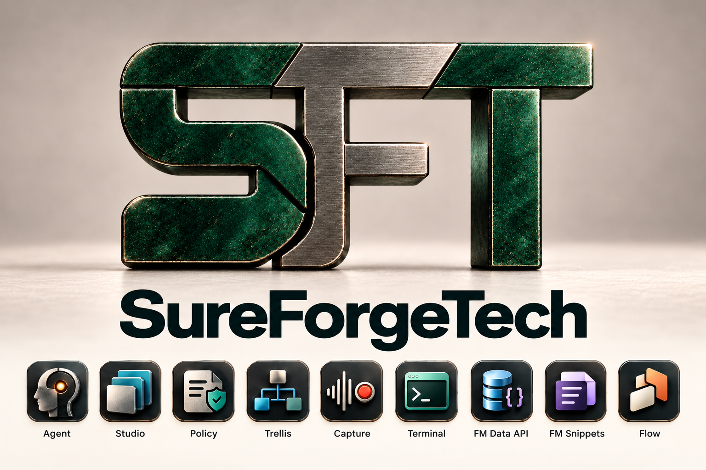
Narrower S and F, with the nine-product family restored.
Open asset ↗Latest refinement: darker jade and steel, with the SureForgeTech wordmark beneath. Patina, graduated shading and the soft matte background remain.
Below it, compare separate jade/steel, copper/steel and monochrome steel palettes. Earlier brand boards include all nine SureForge product icons.

Narrower S and F, with the nine-product family restored.
Open asset ↗A clean jade/steel logo with actual alpha transparency, shown here on white.
Open asset ↗Deeper jade · darker steel · company name beneath
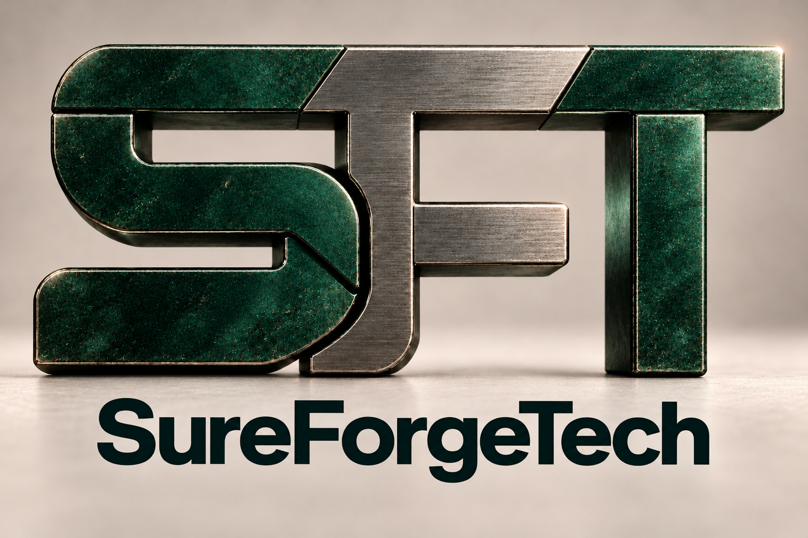
A darker finish preserves the gradients and patina. The company name completes the logo composition.
Open full-size image ↗Richer patina · restrained wear · matte studio setting
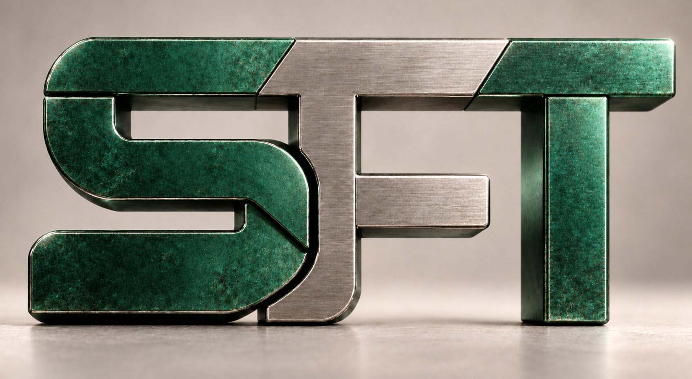
Organic jade gradients and surface wear give the mark more character. The quiet backdrop keeps attention on the lettering.
Open full-size image ↗SFT monogram refinement
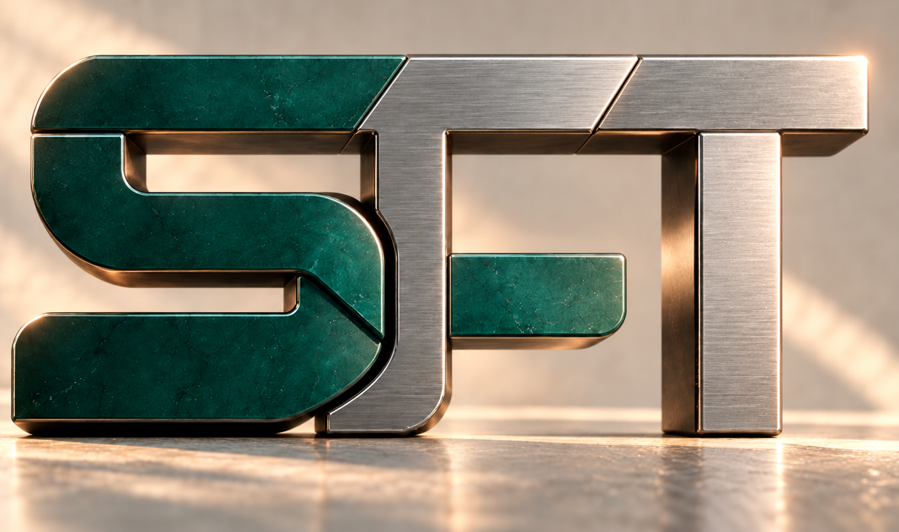
The supplied jade-and-steel image, with F and T reconstructed. Rich jade shading and patina remain central to this study.
Open full-size image ↗SFT monogram refinement
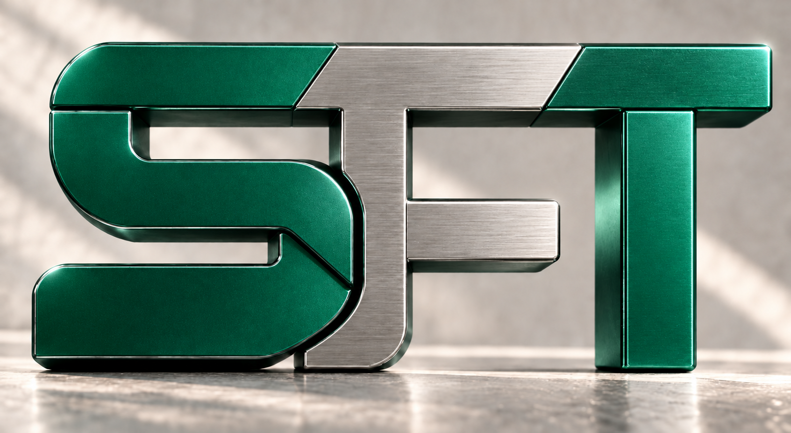
Jade S and T surround a brushed-steel F. A two-material palette.
Open full-size image ↗SFT monogram refinement
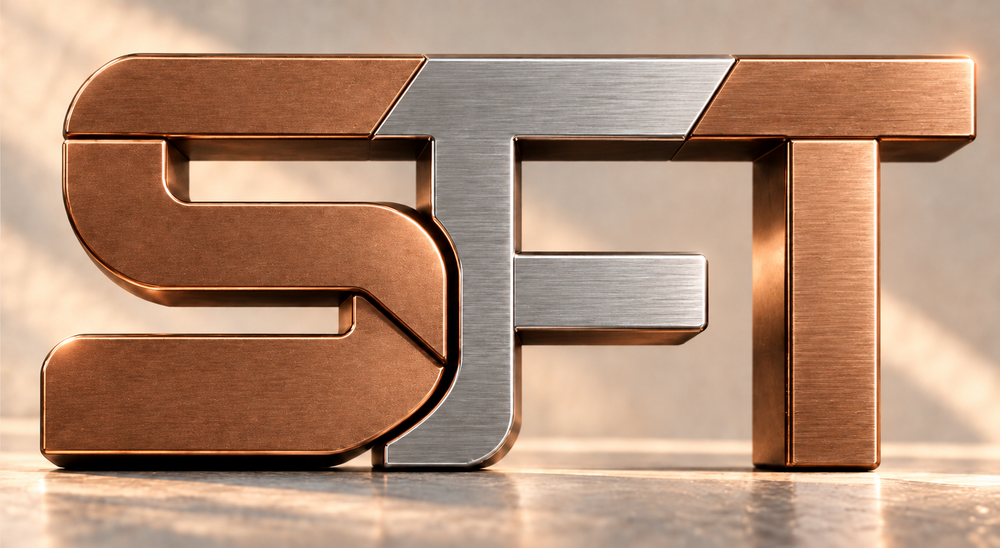
Burnished copper S and T surround a brushed-steel F. A separate warm palette.
Open full-size image ↗SFT monogram refinement
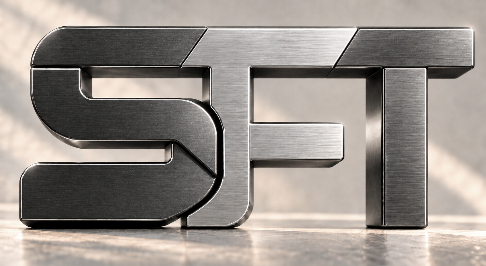
Gunmetal S and T surround a lighter brushed-steel F. A monochrome palette.
Open full-size image ↗SFT monogram refinement
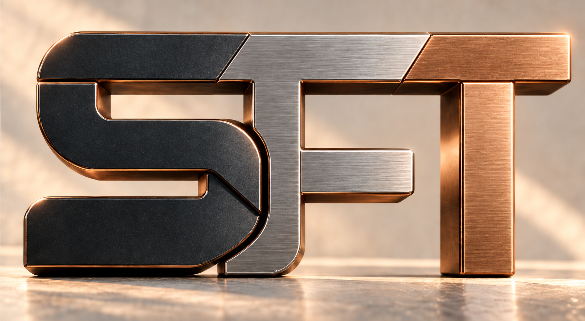
The first top-bar correction: a full-height F with two arms and a complete T crossbar.
Open full-size image ↗Interlock palette · Precision Foundry icon treatment
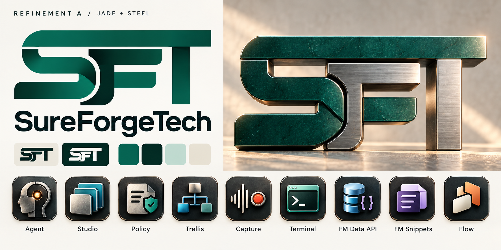
Rich jade, graphite, and brushed steel preserve the Interlock character. The frontal hero and open letter shapes make the SFT structure easier to read.
Direction for review; final vector lettering and small-size variants remain to be developed.
Open full-size board ↗Precision Foundry palette · matching logo construction
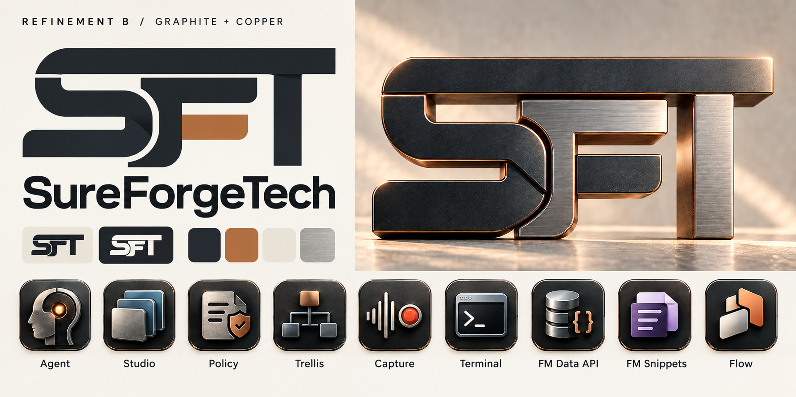
Graphite, copper, and steel give the same construction a warmer industrial character. App icons retain controlled color accents and substantial materials.
A palette comparison based on A, with closely matched composition and icon forms.
Open full-size board ↗Retained for reference
Quiet corporate confidence
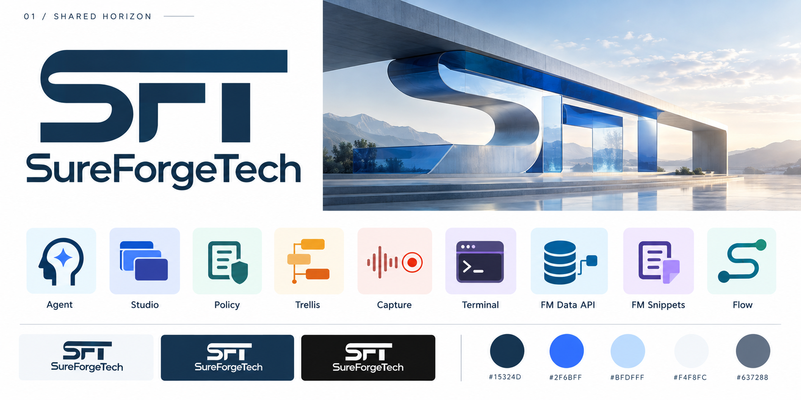
The closest to the original shared-horizontal-top request. Calm navy, open space, and architectural imagery.
Refine next: The F needs a clearer middle stroke when the mark is reduced.
Open full-size board ↗Best overall balance
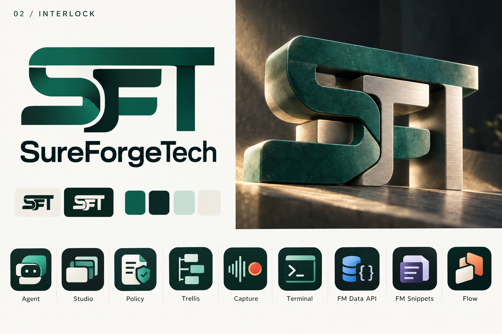
Interlocking letterforms communicate construction and control. Jade and ivory feel assured; the app icons add approachability.
Refine next: The small-size version should simplify the over-under joins.
Open full-size board ↗Sharp technical character
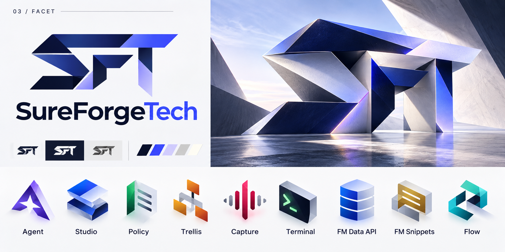
Angular folded geometry gives the parent mark and product family a coherent, high-energy shape language.
Refine next: The faceted finish is more assertive and less welcoming than 2 or 4.
Open full-size board ↗Warmest and most approachable
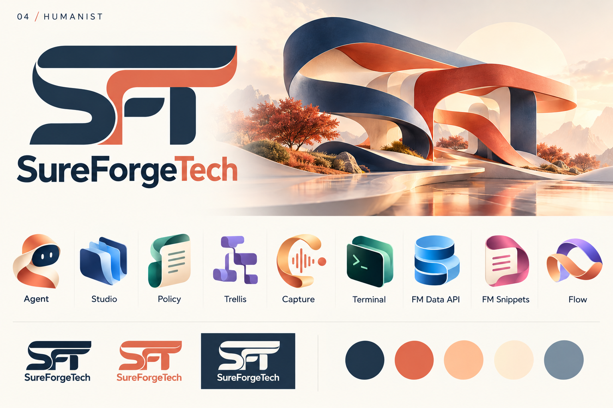
Flowing letterforms, coral accents, and ribbon-based product icons bridge independent makers and professional teams.
Refine next: The F/T separation needs a careful small-size pass.
Open full-size board ↗Strongest industrial identity
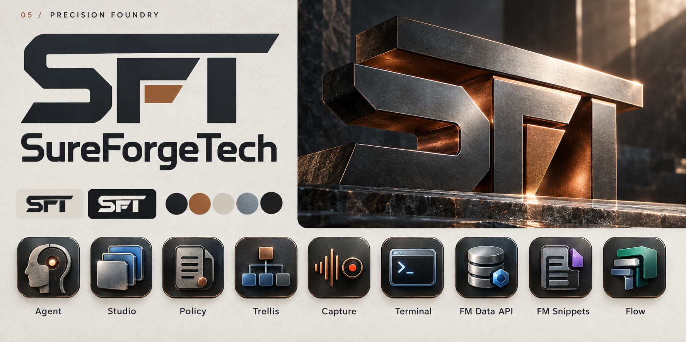
A substantial monogram, graphite and copper, and tactile icons make the forge idea tangible.
Refine next: The weight and material detail can lean toward hardware; small icons need simpler equivalents.
Open full-size board ↗Strongest software-publisher family
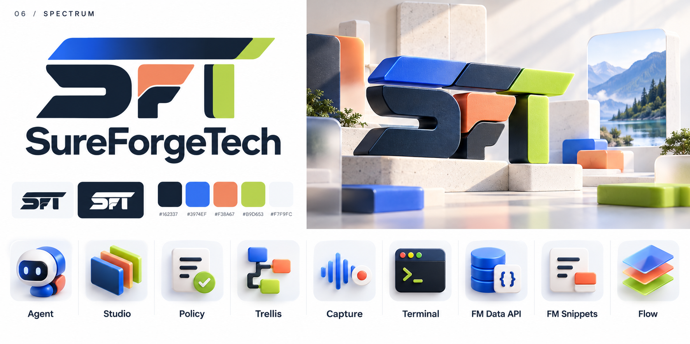
A coordinated spectrum gives each of the nine apps a recognizable personality while retaining a parent identity.
Refine next: The Agent character is playful; a more restrained version could better suit enterprise contexts.
Open full-size board ↗